Plotting#
Saleh Rezaeiravesh, saleh.rezaeiravesh@manchester.ac.uk
Department of Mechanical and Aerospace Engineering, The University of Manchester, Manchester, UK
https://matplotlib.org/stable/index.html
In this notebook, elementary syntaxes for plotting 2D graphs in matplotlib are opresented.
Import matplotlib#
matplotlib has several classes, but the main one that we use here is pyplot. This can be imported as below:
import matplotlib.pyplot as plt
2D plot of a single graph#
Assume we want to plot \(y\) versus \(x\), where we have numpy arrays for these two variables. First, we create some data:
#first create some test data
import numpy as np
x = np.linspace(0,2*np.pi,100) #equi-spaced x-values
y = np.sin(3.*x) #y values at x
Plotting is simple, we use plot from class plt (imported above), and then we should use show() to see the plot.
plt.plot(x,y)
plt.show()
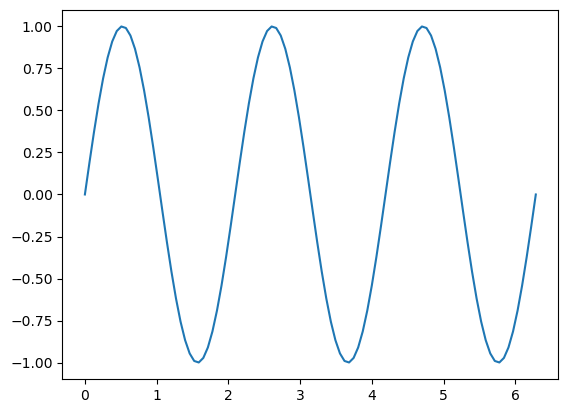
Line’s color and style#
A plot has several attributes including:
line style,
ls: simply you can write-(solid line),:(dotted line),--(dashed line)line color,
colorline width,
lw
plt.plot(x,y,'--',color='red',lw=2)
plt.show()
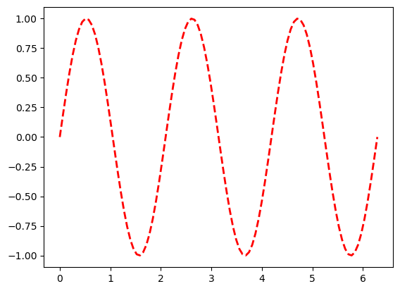
You can see the list of some default colors in matplotlib in this link.
Add markers#
You can use markers solely or with lines. By default, markers appear at values of x. There are different markers, such as o (circle), x (cross), s (square), etc. See the full list here.
plt.plot(x,y,'-ob')
plt.show()
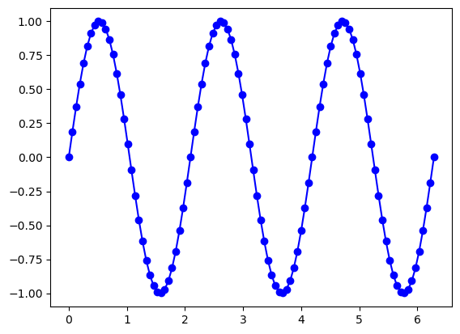
Markers can have a different face color specified by mfc. Note that mfc='none' returns hollow markers.
plt.plot(x,y,'--or',mfc='k')
plt.show()
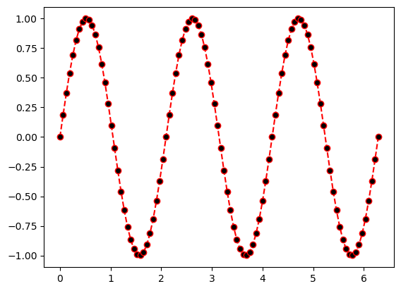
Axis label#
For the axes label, we can use pure text as string, Latex math expressions (provided within $ $ as usual), or a combination of the two. If you are using the latter, make sure you add an r before the string.
Also, the font size of the labels can be easily specified.
plt.plot(x,y,'-k')
plt.xlabel('$x$',fontsize=18) #x label
plt.ylabel(r'$y=\sin(3x)$',fontsize=12) #y label
plt.show()
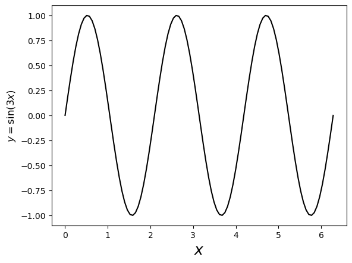
Figure size#
This width and height of the figure can be set through the 1st and second arguments of figsize:
### control the figure size
plt.figure(figsize=(8,3))
plt.plot(x,y,'-k')
plt.show()
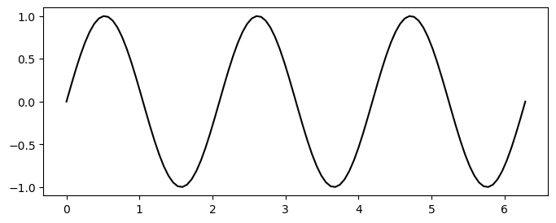
Size of the axes’ ticks#
There are different ways to set the size of the ticks on the axes, including using plt.xticks() and plt.yticks():
plt.figure(figsize=(8,3))
plt.plot(x,y,'-k')
plt.xticks(fontsize=16)
plt.yticks(fontsize=16)
plt.show()
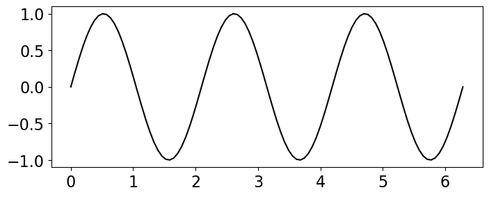
Add grid#
plt.plot(x,y,'-k')
plt.grid()
plt.show()
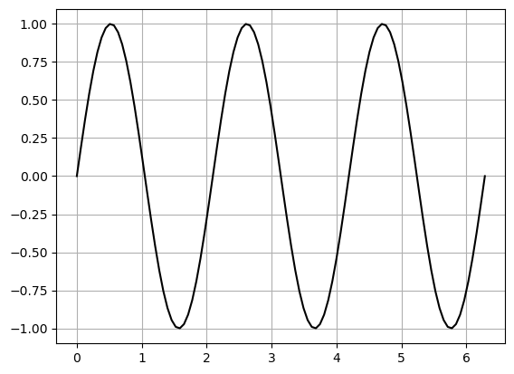
Multiple graphs in one plot#
Seomtimes we need to plot two or more graphs in one plot. To distinguish between multiple graphs, different line styles and coloes with and without markers can be used. A label can be assigned to each graph using label key in plot function. To show the labels as a legend, call plt.legend which has several parameters including loc (location of the legend on the plot) and fontsize. For a full list of parameters, see this link.
Let’s create another graph and plot it along the above curve in one plot.
y2=0.5*np.cos(0.5*x**2)
plt.figure(figsize=(8,4))
plt.plot(x,y,'-b',label=r'$\sin(3x)$') #plotting the first graph
plt.plot(x,y2,'--r',label=r'$0.5\cos(x^2/2)$') #plotting the second graph
plt.xlabel(r'$x$',fontsize=16)
plt.ylabel(r'$y$',fontsize=16)
plt.xticks(fontsize=16)
plt.yticks(fontsize=16)
plt.legend(loc='best',fontsize=14) #add legend with location set to be the best one
plt.show()
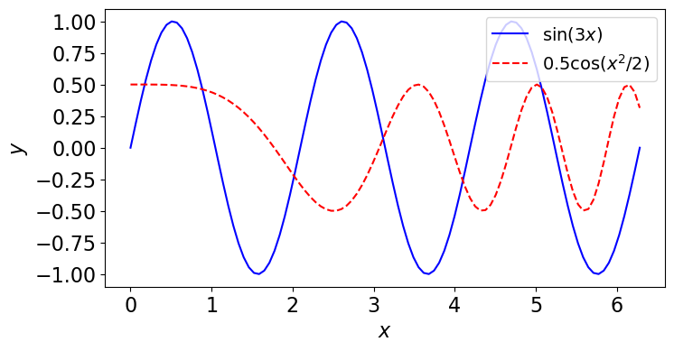
Multiple graphs in subplots#
We can have a set of subplots within each one or more plots are provided.
Use plt.subplot(nRows, nColumn, id) to create an array of subplots, where:
nRows: number of rowsnColumn: number of columnsid: plot id - it goes from 1 tonRows*nColumn.
Once all subplots are defined, write plt.show().
plt.figure(figsize=(10,5))
#subplot 1
plt.subplot(1,2,1) #indices: 1 row, 2 column, first subplot
plt.plot(x,y,'-b',label=r'$\sin(x)$')
plt.xlabel(r'$x$',fontsize=16)
plt.ylabel(r'$y$',fontsize=16)
plt.xticks(fontsize=16)
plt.yticks(fontsize=16)
plt.legend(loc='best',fontsize=14) #add legend
#subplot 2
plt.subplot(1,2,2) #indices: 1 row, 2 column, second subplot
plt.plot(x,y2,'--r',label=r'$\cos(2x)$')
plt.xlabel(r'$x$',fontsize=16)
plt.ylabel(r'$y$',fontsize=16)
plt.xticks(fontsize=16)
plt.yticks(fontsize=16)
plt.legend(loc='best',fontsize=14) #add legend
plt.show() #show both subplots
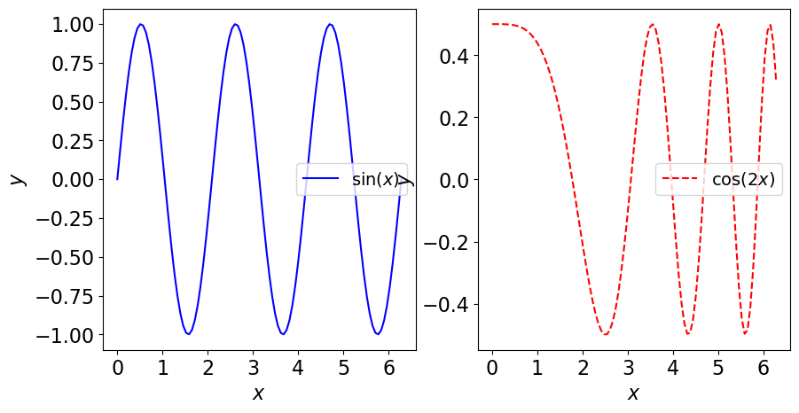
We can add other graphs to each of these subplots. Let’s add an array and a list of discrete data, for instance (shown by markers).
#list of data
a=[0,0.5,4,2.8,5,1]
b=[-0.25,0,0.39,0.6,-0.4,0]
#a new function using numpy arrays as input
y2=np.cos(4*x)*np.sin(2*x)
plt.figure(figsize=(14,3))
#subplot 1
plt.subplot(1,2,1) #indices: 1 row, 2 column, first subplot
plt.plot(x,y,'-b',label=r'$\sin(3x)$')
plt.plot(a,b,'o k',ms=7, label='Some random data')
plt.xlabel(r'$x$',fontsize=16)
plt.ylabel(r'$y_1$',fontsize=16)
plt.xticks(fontsize=16)
plt.yticks(fontsize=16)
plt.legend(loc='best',fontsize=10) #add legend
#subplot 2
plt.subplot(1,2,2) #indices: 1 row, 2 column, second subplot
plt.plot(x,y2,'--r',label=r'$0.5*\cos(x^2/2)$')
plt.xlabel(r'$x$',fontsize=16)
plt.ylabel(r'$y_2$',fontsize=16)
plt.xticks(fontsize=16)
plt.yticks(fontsize=16)
plt.legend(loc='best',fontsize=10) #add legend
plt.show() #show both subplots
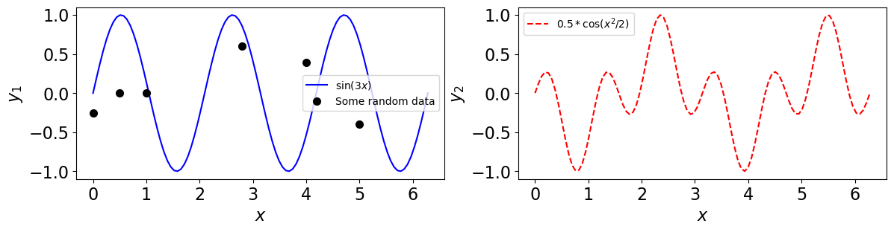
Save a plot#
To save a plot made by matplotlib, we can use savefig('PATH/figName'). Make sure the path exists on the disk. figName should contain the image type, like .png, .pdf, etc. If you want to show the plot, write plt.show() after plt.savefig().